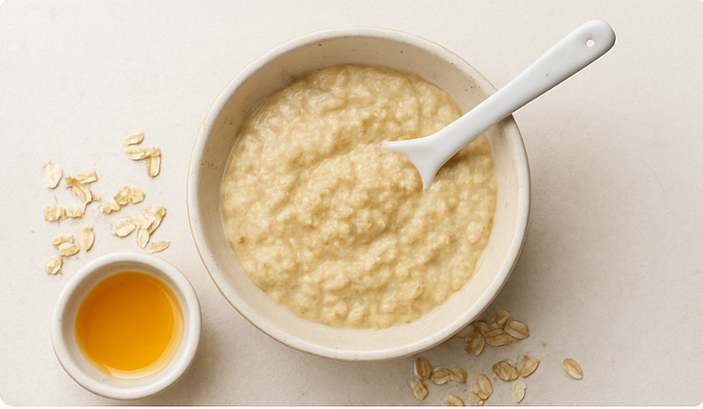
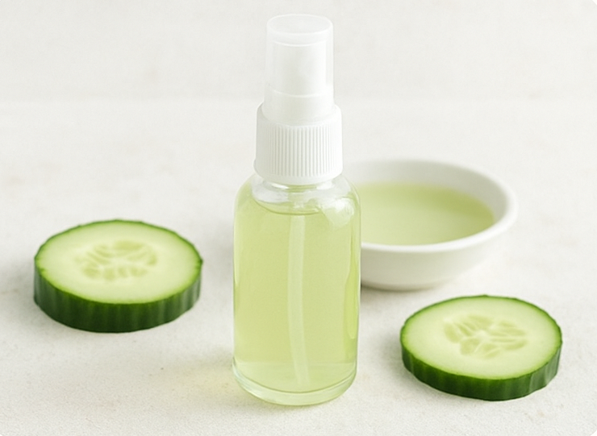
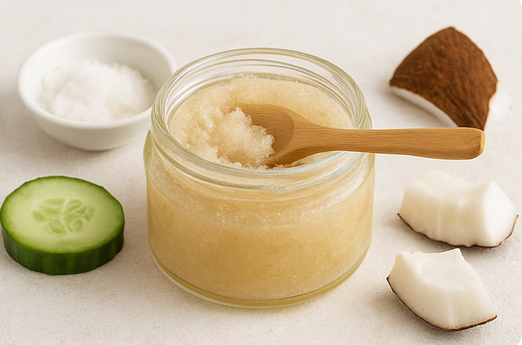

Recetas Caseras & DIY
Fórmulas naturales seguras, con ingredientes que tienes en casa y evidencia.

CALMANTE
Mascarilla de Avena y Miel (Anti-irritación)
Perfecta para calmar la piel después de la exposición al sol o si tienes rosácea.
Ver Receta →

HIDRATANTE
Tónico Facial Refrescante de Pepino y Manzanilla
Rehidrata la piel y reduce la hinchazón gracias a sus propiedades astringentes suaves.
Ver Receta →

EXFOLIANTE
Exfoliante Suave de Azúcar y Aceite de Coco
Retira células muertas de forma natural. ¡Ideal para el cuerpo!
Ver Receta →